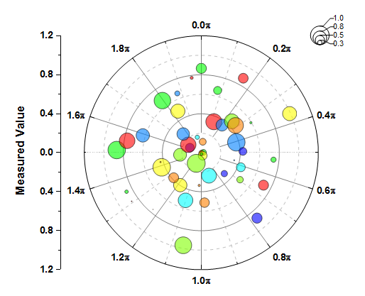
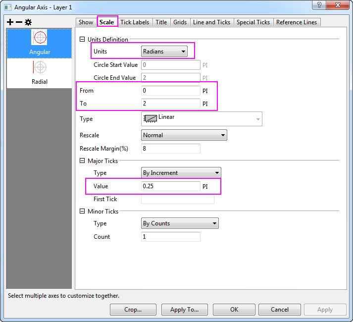
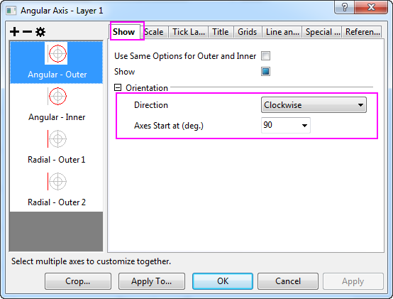
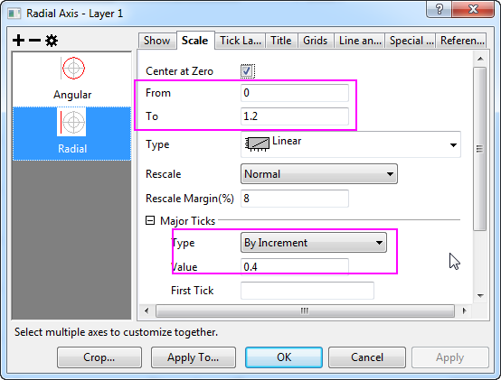
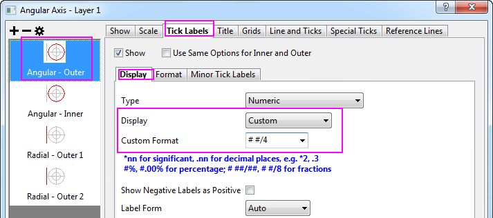
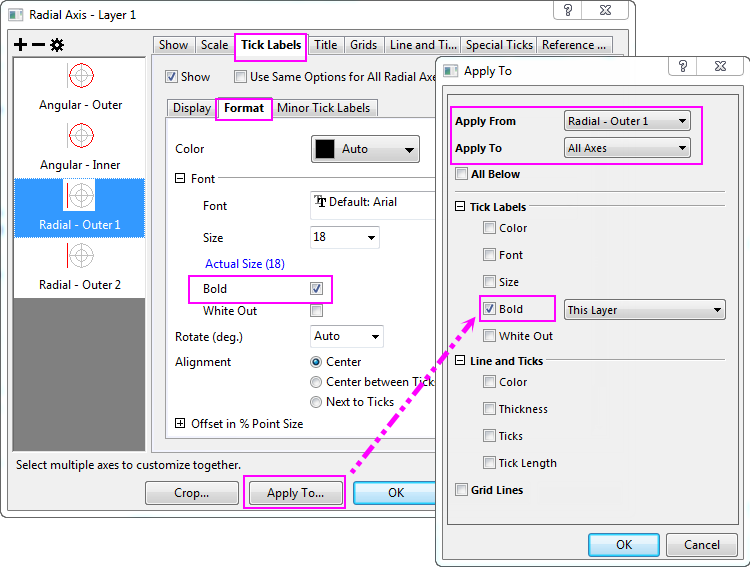
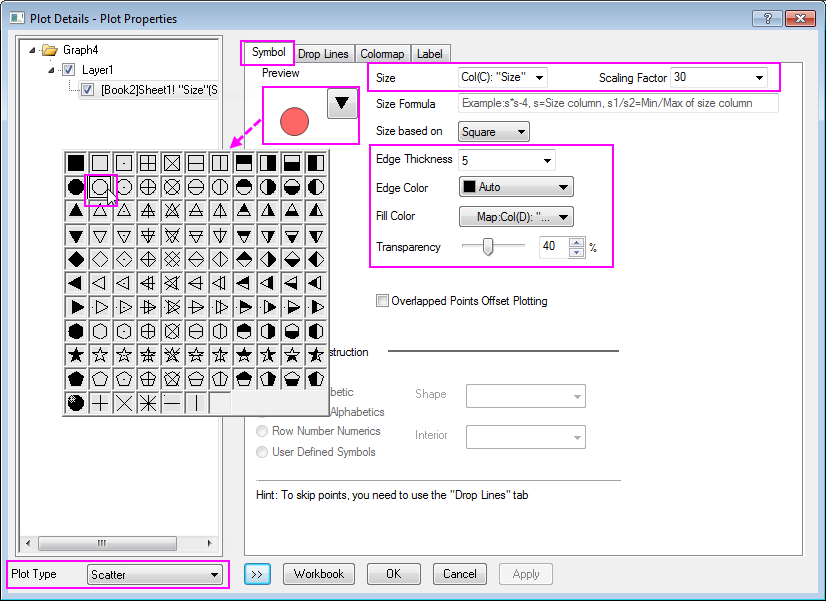
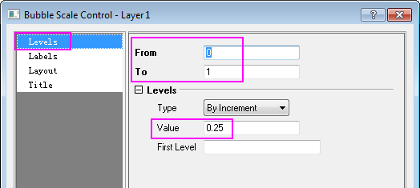
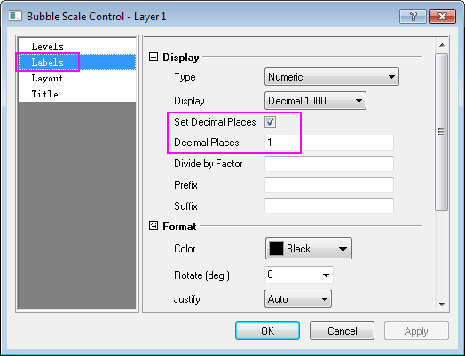
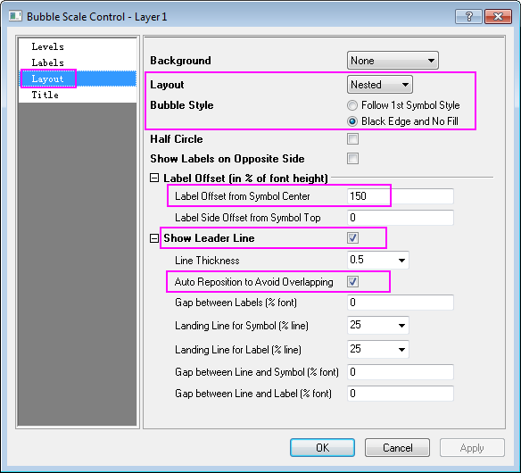

Polardiagramm mit benutzerdefinierter Winkelskalierung
polar-custom-angular
Zusammenfassung
Normalerweise werden die Einheiten der polaren Winkelachsen in Grad, Radian oder Gon angegeben. Origins Polardiagramm unterstützt jedoch auch die Verwendung von benutzerdefinierten Einheiten.

Origin-Version mind. erforderlich: 2018b
Was Sie lernen werden
Dieses Tutorial zeigt Ihnen, wie Sie:
- einen Datensatz verwenden, um Symbolgröße und -farbe in einem Polardiagramm festzulegen,
- eine benutzerdefinierte Einheit für die Winkelachsen verwenden,
- die Hilfsstrichsbeschriftungen als Viertel anzeigen,
- die Blasenskala hinzufügen und benutzerdefiniert anpassen.
Schritte
Sie können dieses Diagramm auch im Lernzentrum finden. (Wählen Sie Hilfe: Lernzentrum im Menü oder drücken Sie die Taste F11. Öffnen Sie dann Diagrammbeispiel: Polar Graphs.)
- Markieren Sie Spalte B und wählen Sie Zeichnen: Spezialisiert: Symbol Theta, r, um ein Symboldiagramm im polaren Koordinatensystem zu erstellen.
- Klicken Sie doppelt auf eine der Achsen, um den Dialog Achsen zu öffnen. Gehen Sie zur Registerkarte Skalierung und wählen Sie Winkel im linken Bedienfeld. Erweitern Sie in diesem Bedienfeld den Zweig Definition der Einheiten und wählen Sie Radian als Einheiten. Stellen Sie sicher, dass die Skalierung auf von 0 bis 2 PI festgelegt ist. Setzen Sie den Wert für das Inkrement auf 0,25.

- Gehen Sie zur Registerkarte Zeigen für die Achse Winkel - Äußere. Ändern Sie die Richtung in Uhrzeigersinn und setzen Sie Drehen (Grad) auf 90.

- Gehen Sie zur Registerkarte Skalierung und wählen Sie Radial im linken Bedienfeld. Setzen Sie die Skalierung auf von 0 bis 1,2 und ändern Sie den Wert des Inkrements auf 0,4.

- Gehen Sie zur Registerkarte Beschriftung der Hilfsstriche für die Achse Winkel - Äußere. Öffnen Sie die Unterregisterkarte Anzeige, setzen Sie Anzeige auf Benutzerdefiniert und geben Sie
# #/4 als Benutzerdefiniertes Format ein, um Beschriftungen der Hilfsstriche als Brüche zu zeigen.

- Wählen Sie die Achse Radial - Äußere 1. Wählen Sie die Unterseite Format und aktivieren Sie das Kontrollkästchen Fett. Klicken Sie auf die Schaltfläche Anwenden auf. Stellen Sie im Popup-Dialog sicher, dass Anwenden von auf Radial - Äußere 1 und Anwenden auf auf Alle Achsen festgelegt ist. Aktivieren Sie dann das Kontrollkästchen Fett unter Beschriftung der Hilfsstriche. Klicken Sie auf OK.

Klicken Sie im Dialog Achsen auf OK, um diese Einstellungen anzuwenden und den Dialog Achsen zu schließen.
- Klicken Sie doppelt auf das Liniendiagramm, um den Dialog Details Zeichnung zu öffnen , übernehmen Sie auf der Registerkarte Symbole die folgenden Einstellungen, die im Screenshot abgebildet sind:

Klicken Sie auf OK, um die Einstellungen anzuwenden und den Dialog Details Zeichnung zu schließen.
- Wählen Sie Blasenskala im Menü Einfügen, um in diesem Diagramm eine Blasenskala einzufügen.
- Klicken Sie mit der rechten Maustaste auf die Blasenskala und wählen Sie Einstellungen, um den Dialog der Steuerung zu öffnen. Gehen Sie zur Seite Ebene, setzen Sie die Ebene auf von 0 bis 1 und ändern Sie den Wert des Inkrements auf 0,25.

- Wechseln Sie zur Seite Beschriftungen, aktivieren Sie das Kontrollkästchen Dezimalstellen festlegen und geben Sie 1 im Textfeld Dezimalstellen ein.

- Gehen Sie zur Seite Layout und wählen Sie Geschachtelt in der Auswahlliste Layout. Wählen Sie Schwarzer Rand und keine Füllung für den Blasenstil und ändern Sie Beschriftungsversatz von Symbolmitte in 150. Aktivieren Sie das Kontrollkästchen Verbindungslinie zeigen und erweitern Sie den Zweig, um das Kontrollkästchen Automatische Neupositionierung, um Überschneidungen zu vermeiden zu aktivieren. Klicken Sie auf OK, um die Einstellung anzuwenden, und schließen Sie den Dialog.

Verschieben Sie das Legendenobjekt und die Radialachse manuell und klicken Sie auf die Schaltfläche Anti-Aliasing aktivieren/deaktivieren , um das Diagramm zu glätten. Das Diagramm sollte folgendermaßen aussehen: